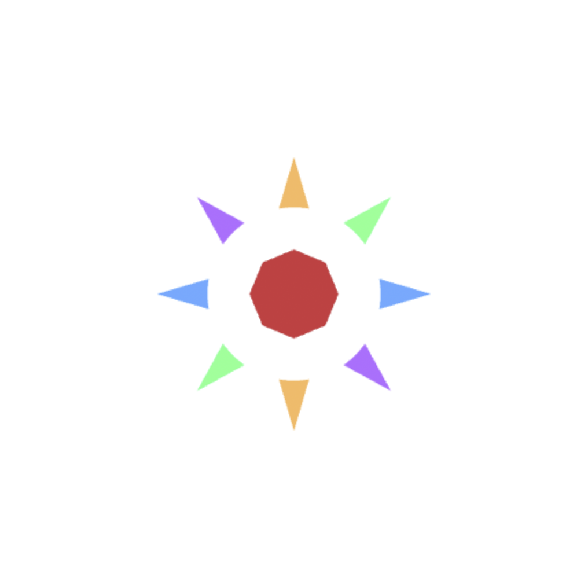
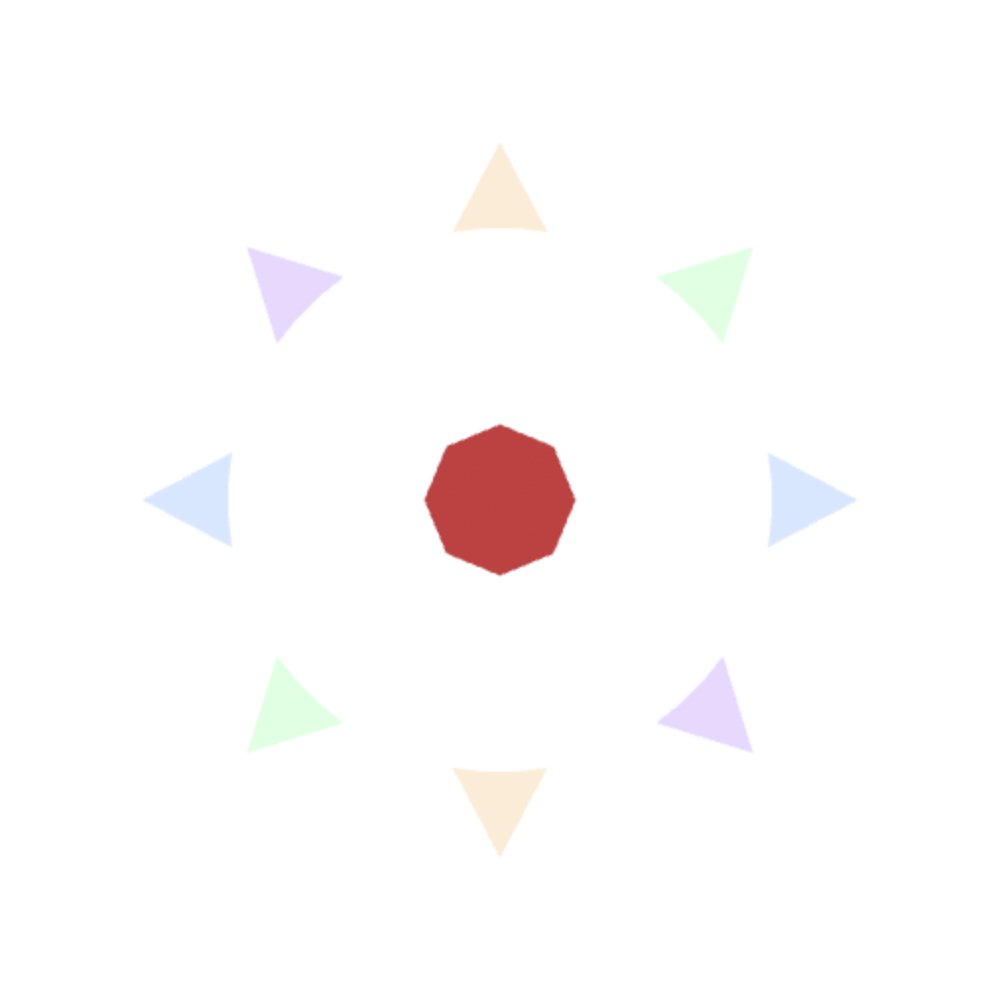

Launch demoPetal Burst
A flower made of 32 solid-colored triangles that bursts apart and fades to white while its core holds still. The motion and the color change are both computed in the vertex shader.
- WebGL
- GLSL
- JavaScript